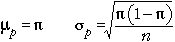
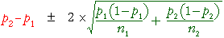

If you don't want to print now,
Two groups of successes and failures
We now consider data that are obtained as random samples from two populations, with the sampled individuals being categorised into successes and failures.
Since our model involves only two parameters, π1 and π2, the two groups are the same only if π2 - π1 = 0. The value of π2 - π1 is usually unknown but can be estimated by p2 - p1. However p2 - p1 is a random quantity so its variability must be taken into account when interpreting its value.
Example

Note that the questions do not refer to the specific 141 births in the study. They ask about differences between winter and summer births 'in general'.
We are interested in π2 - π1 rather than p2 - p1, so we need to understand the accuracy of our point estimate.
Difference between two proportions
Within each group, the sample proportion of successes, p, has a distribution that is approximately normal in large samples and has mean and standard deviation

Applying the general results about the difference between two independent random quantities:

Since the individual proportions are approximately normal (in large samples), their difference is also approximately normal:

Standard error of p2 - p1
The standard deviation of p2 - p1 is also its standard error when it is used to estimate π2 - π1,

In practice, π1 and π2 must be replaced by their sample equivalents to estimate the standard error.

Confidence interval for difference
Most 95% confidence intervals are of the form
estimate ± 1.96 × se(estimate)
perhaps with a refinement of using a slightly higher value than 1.96 (e.g. a t-value) if the standard error is estimated. Applying this to our estimate of π2 - π1and using 2 instead of 1.96 gives the approximate 95% confidence interval

Example

Two-tailed test
H0 : π1 = π2
HA : π1 ≠ π2
For this test, the steps involved in obtaining a p-value are:

The p-value is interpreted in the same way as for all previous tests. A p-value close to zero is unlikely when H0 is true, but is more likely when HA holds. Small p-values therefore provide evidence of a difference between the population probabilities.
One-tailed test
In a 1-tailed test, the alternative hypothesis is
HA : π1 − π2 > 0 or HA : π1 − π2 < 0
The test statistic is identical to that for a 2-tailed test and the p-value is obtained in a similar way, but it is found from only a single tail of the standard normal distribution.
Alternative test statistic
Since π1 and π2 are equal if H0 is true, the overall proportion of successes, p, can be used in the formula for the standard error of p2 - p1.

This refinement makes little difference in practice, so the examples below use the 'simpler' formula that we gave earlier.
Two-tailed example

One-tailed example